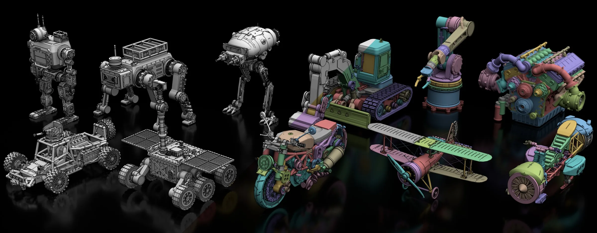

Procedura，2026。以程序化控制实现的智能体三维建模。


最新动态。论文、发布与进展。
-
Procedura 通过 MCP 接入 Codex 与 Claude Code。

-
新论文：Procedura，把三维物体写成可编辑程序的智能体。

-
两篇论文 Direct3D-V3 与 MIKU 被 SIGGRAPH Asia 2026（ACM TOG）接收。

-
新基准：P3D-Bench，评测多模态大模型的参数化三维生成。

-
两篇论文 SpatialVID 与 TEXTRIX 被 CVPR 2026 接收。

-
Anime-Ready 被 ICLR 2026 接收。

-
新论文：SpatialVID，面向世界模型与空间智能的视频数据集。

-
Direct3D-S2 被 NeurIPS 2025 接收。

-
Align Your Rhythm 被 ICCV 2025 接收。

-
开源 Direct3D-S2，包含代码与模型。

-
开始在 Apple 担任计算机视觉研究实习生。
-
两篇论文 Direct3D 与 FastDrag 被 NeurIPS 2024 接收。

-
三篇 ECCV 2024 论文：Relightable 3D Gaussian、STAG4D 与 UniDream。

论文发表。三维生成、重建，以及评测这些工作的工具。
预印本


2026
-

SIGGRAPH Asia 2026（ACM TOG）
Direct3D-V3: Latent-Free Diffusion Transformers in the Native Voxel Domain
-

SIGGRAPH Asia 2026（ACM TOG）
MIKU: Material Invariance and Knowledge Unification for PBR Generation
-

-

-

-

ICLR 2026
Anime-Ready: Controllable 3D Anime Character Generation with Body-Aligned Component-Wise Garment Modeling
-

ICASSP 2026
Physics-Aware Novel-View Acoustic Synthesis with Vision-Language Priors and 3D Acoustic Environment Modeling


2025


2024


教育背景
- 2024 至今计算机科学博士南京大学
- 2022 - 2023电子信息工程博士（已转入南京大学）哈尔滨工业大学
- 2018 - 2021计算机科学硕士哈尔滨工程大学
- 2014 - 2018电子信息工程学士哈尔滨理工大学
工作经历
- 2025 - 2026Apple计算机视觉研究实习生
- DreamTech（Neural4D）三维生成
- VAST（Tripo AI）三维生成
- 太极图形（Meshy AI）三维生成
开源项目。我开发或参与的工具。
-
 Procedura
带可编辑部件的智能体三维建模，可通过 MCP 在 Codex 与 Claude Code 中运行。
Procedura
带可编辑部件的智能体三维建模，可通过 MCP 在 Codex 与 Claude Code 中运行。
-
 P3D-Bench
评测多模态大模型参数化三维生成的基准与排行榜。
P3D-Bench
评测多模态大模型参数化三维生成的基准与排行榜。
-
 Pointrix
用于三维重建与渲染的可微点渲染库。
Pointrix
用于三维重建与渲染的可微点渲染库。
-
 threestudio-3DGS
threestudio 框架的高斯泼溅扩展。
threestudio-3DGS
threestudio 框架的高斯泼溅扩展。
-
 taichi-nerfs
基于 Taichi 与 PyTorch 的 Instant-NGP 神经辐射场训练流程。
taichi-nerfs
基于 Taichi 与 PyTorch 的 Instant-NGP 神经辐射场训练流程。
-
 taichi-ngp-renderer
用纯 Python 与 Taichi 实现的 Instant-NGP 渲染器。
taichi-ngp-renderer
用纯 Python 与 Taichi 实现的 Instant-NGP 渲染器。
-
 nerfacc
快速 NeRF 加速工具包，贡献者。
nerfacc
快速 NeRF 加速工具包，贡献者。
学术服务。我参与审稿的会议与期刊。
会议审稿
- CVPR
- SIGGRAPH
- SIGGRAPH Asia
- ICCV
- NeurIPS
- ICLR
- ECCV
- AAAI
- ICASSP
期刊审稿
- TPAMI
- TVCG
- TCSVT
- CVIU